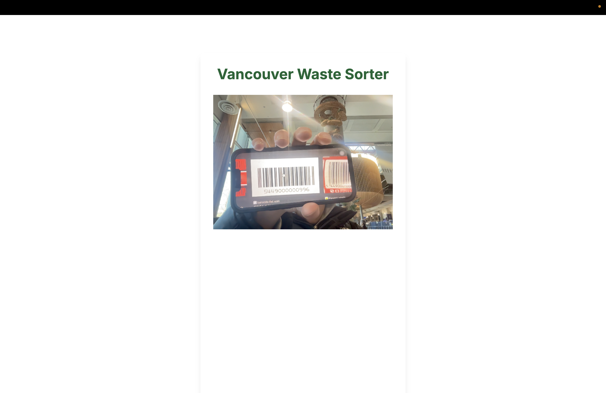
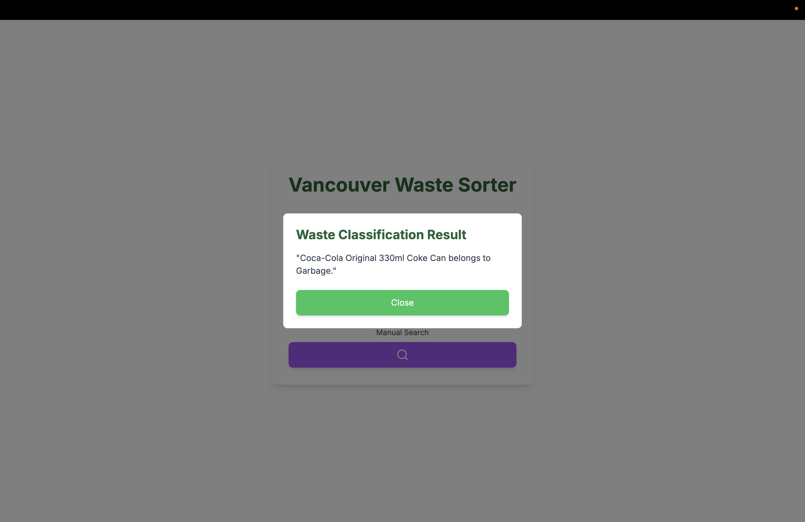
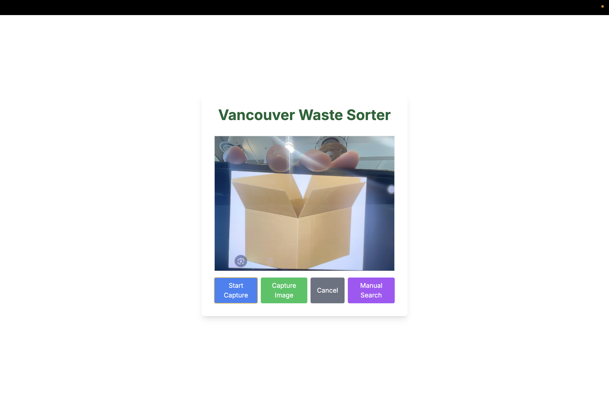
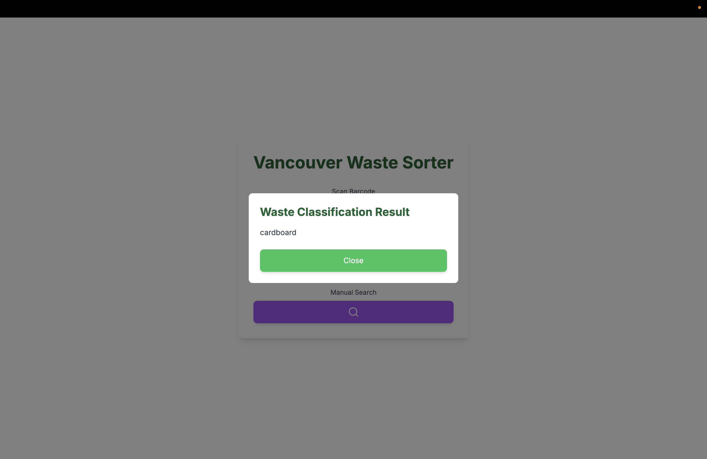
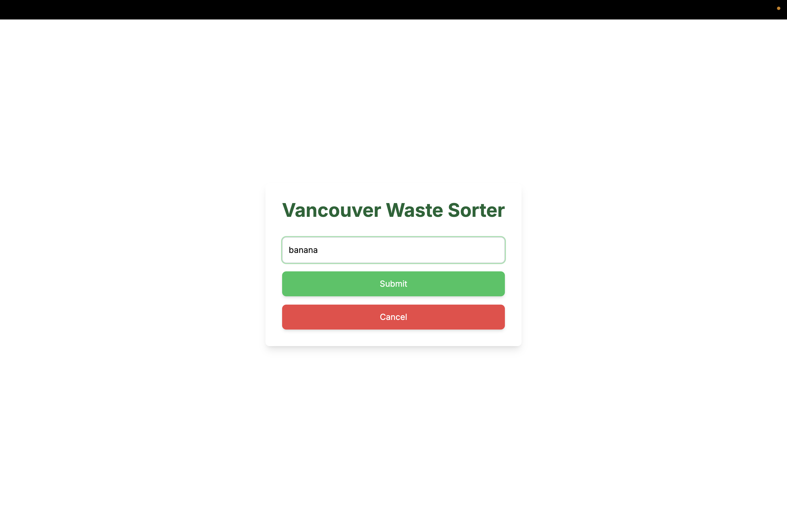

Hackathon project @nwHacks 2025
: Helps individuals and businesses correctly sort waste, reduce environmental impact, and contribute to a cleaner city.

Barcode Scanning: Identifies products by scanning barcodes and fetching details from an API database.
Input: Barcode scanning

Output: Displays product details and waste sorting instructions.

Image Recognition: Uses a TensorFlow-trained model to classify waste items from images.
Input: Image Recognition

Output: Displays waste sorting instructions.

Manual Input: Allows users to input product names to determine the correct waste category.
Input: Manual Input

Output: Displays waste sorting instructions.
SOURCE
GitHub of App
GitHub of TensorFlow Model
nwHacks Project page
Deploy
STACK
Python, Django, TypeScript, React, TensorFlow, OpenAI API
DURATION
2025.1/18 - 2025.1/19